- Technical specification
- Vink Customer Care Agent · Part 4 of 9
4 · Agent flows (tools)
Each agent flow starts with When an agent calls the flow and ends with Respond to the agent. The agent waits for the response, so each flow must answer within 100 seconds. Every flow follows the same shape: Initialize variables → Try scope → Catch scope (run after Try failed/timed out) → Respond, so the agent always gets an answer, even on error.
Standard agent-flow shape
When an agent calls the flow (typed inputs)
Initialize result variables (defaults = safe failure values)
Try
Dataverse reads/writes
Set result variables
Catch (Try failed / timed out)
Set result = Error
Respond to the agent (outputs = variables)
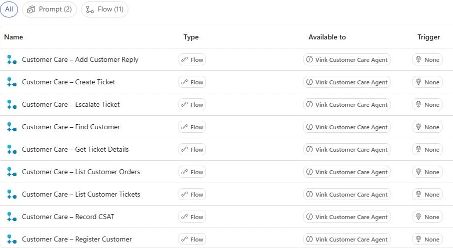
| Flow | Inputs | Outputs | Called by |
|---|---|---|---|
| Add Customer Reply | TicketNumber, ContactId, Message | result, message | Check Ticket Status, New Ticket |
| Create Ticket | ContactId, OrderNumber, Category, Subject, Description, AISummary, Priority, AllowDuplicate, CustomerEmail | result, duplicate, ticketnumber, status, respondby, resolveby, team, priority | Escalate, New Ticket |
| Escalate Ticket | TicketNumber, ContactId, Reason | result, team | Escalate |
| Find Customer | Email, OrderOrCustomerNumber | status, contactid, firstname, fullname, customernumber, isvip, openticketcount, openticketsummary | Identify Customer |
| Get Ticket Details | TicketNumber, ContactId | result, subject, status, priority, category, team, latest, raised, resolveby, overdue, timeline, canrate | Check Ticket Status |
| List Customer Orders | ContactId | ordercount, orderchoices, orderlist | New Ticket, Track an Order |
| List Customer Tickets | ContactId, Scope | ticketcount, ticketchoices, ticketlist | Check Ticket Status, Escalate, Rate a Ticket |
| RMA Process | SerialNumber, PurchaseDate, FaultDescription, FaultSummary, CustomerEmail, CustomerName, ContactId | inwarranty, claimnumber, rmanumber, ticketnumber, warrantyenddate, outcome | Warranty Claim |
| Record CSAT | TicketNumber, ContactId, Score, Comment | result | Rate a Ticket |
| Register Customer | FirstName, LastName, Email, Phone | status, contactid, customernumber, fullname | Identify Customer |
| Repair Update | TicketNumber | outcome | Orchestrator |
Add Customer Reply
- Trigger
- When an agent calls the flow (Skills)
- Tool description
- Adds the customer's message to their ticket. Used by topics only.
- Inputs
TicketNumber(string)ContactId(string)Message(string)- Outputs (Respond to the agent)
result,message- Tables
- Service Ticket (R/W), Ticket Update (W)
- Called by
- Check Ticket Status, New Ticket
- Actions
- 18
- Source
src/Workflows/CustomerCare-AddCustomerReply-5A822F8A-F6CD-F111-A05A-6045BD565BD6.json
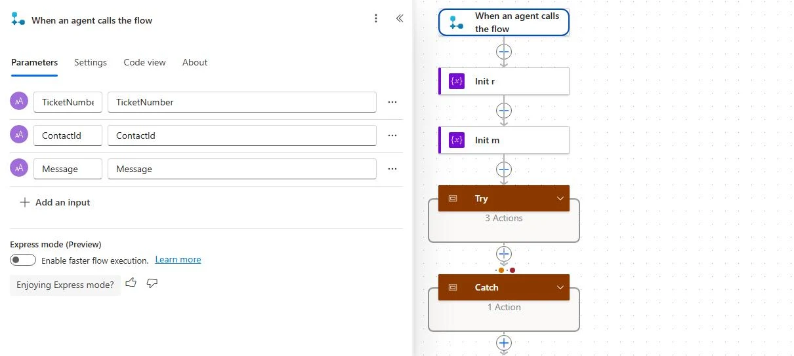
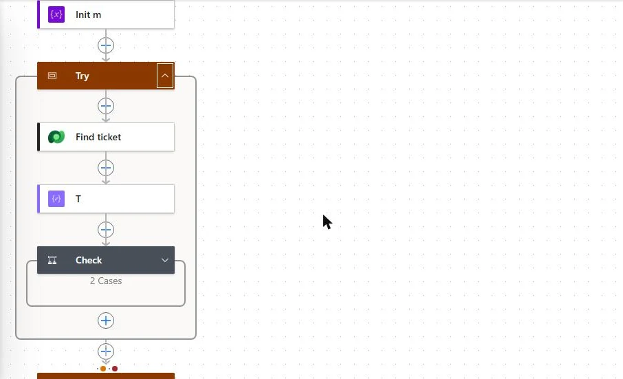
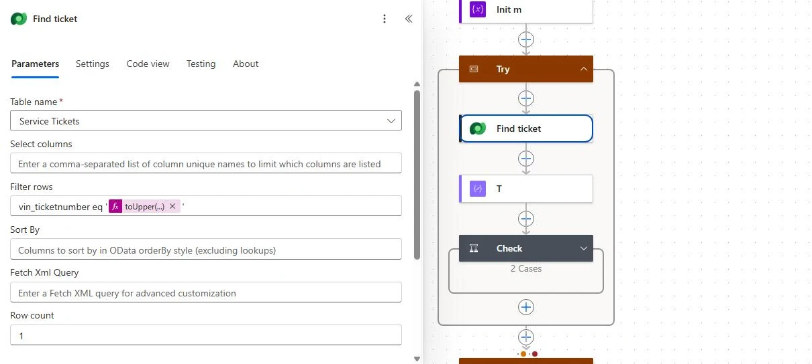
All 18 actions with expressions from source
| # | Action | Type | Key settings and expressions |
|---|---|---|---|
| 1 | Init r | Initialize variable | vResult (string) |
| 2 | Init m | Initialize variable | vMessage (string) |
| 3 | Try | Scope | — |
| 4 | ↳ Find ticketinside Try | Dataverse · List rows | Table Service Ticket $filter vin_ticketnumber eq '@{toUpper(trim(triggerBody()?['text']))}'$top 1$expand vin_SupportTeam($select=vin_name),vin_Customer($select=fullname,emailaddress1) |
| 5 | ↳ Tinside Try | Compose | Value @first(outputs('Find_ticket')?['body/value']) |
| 6 | ↳ Checkinside Try | Condition | Condition {"and": [{"equals": ["@and(not(empty(outputs('T'))),equals(toLower(coalesce(outputs('T')?['_vin_customer_value'],'')),toLower(trim(triggerBody()?['text_1']))))", true]}]} |
| 7 | ↳ Is closedinside Check · yes | Condition | Condition {"and": [{"equals": ["@outputs('T')?['vin_ticketstatus@OData.Community.Display.V1.FormattedValue']", "Closed"]}]} |
| 8 | ↳ Set closedinside Is closed · yes | Set variable | vResult Closed |
| 9 | ↳ Set closed msginside Is closed · yes | Set variable | vMessage @{concat(outputs('T')?['vin_ticketnumber'],' is closed, so I can''t add to it. I can raise a new ticket for you instead.')} |
| 10 | ↳ Add updateinside Is closed · no | Dataverse · Add a new row | Table Ticket Update vin_statusafter @{if(contains(createArray('Awaiting customer','Resolved'),outputs('T')?['vin_ticketstatus@OData.Community.Display.V1.FormattedValue']),'In progress',outputs('T')?['vin_ticketstatus@OData.Community.Display.V1.FormattedValue'])}vin_Ticket@odata.bind /vin_ccservicetickets(@{outputs('T')?['vin_ccserviceticketid']})vin_updatetext @{triggerBody()?['text_2']}vin_name Customer repliedvin_updatedby @{outputs('T')?['vin_Customer']?['fullname']}vin_updatedon @{utcNow()}vin_visibletocustomer true |
| 11 | ↳ Reopeninside Is closed · no | Condition | Condition {"or": [{"equals": ["@outputs('T')?['vin_ticketstatus@OData.Community.Display.V1.FormattedValue']", "Awaiting customer"]}, {"equals": ["@outputs('T')?['vin_ticketstatus@OData.Community.Display.V1.FormattedValue']", "Resolved"]}]} |
| 12 | ↳ Set in progressinside Reopen · yes | Dataverse · Update a row | Table Service Ticket recordId @outputs('T')?['vin_ccserviceticketid']vin_latestupdate Thanks for your reply. The @{outputs('T')?['vin_SupportTeam']?['vin_name']} team has it and will update you soon.vin_ticketstatus 949870006 |
| 13 | ↳ Set okinside Is closed · no | Set variable | vResult Added |
| 14 | ↳ Set msginside Is closed · no | Set variable | vMessage @{concat('Thanks, I''ve added your message to ',outputs('T')?['vin_ticketnumber'],' and the ',outputs('T')?['vin_SupportTeam']?['vin_name'],' team will see it.')} |
| 15 | ↳ Set nfinside Check · no | Set variable | vResult @{if(empty(outputs('T')),'NotFound','NotYours')} |
| 16 | Catch | Scope | Run after Try (Failed/TimedOut) |
| 17 | ↳ Set vResult 0inside Catch | Set variable | vResult Error |
| 18 | Respond | Respond to the agent | Body {"result": "@{variables('vResult')}", "message": "@{variables('vMessage')}"}Run after Catch (Succeeded/Skipped) |
Create Ticket
- Trigger
- When an agent calls the flow (Skills)
- Tool description
- Creates a support ticket for the verified customer. Used by topics only.
- Inputs
ContactId(string)OrderNumber(string) Order number or emptyCategory(string) Repair, Delivery, Billing, Returns or GeneralSubject(string)Description(string)AISummary(string)Priority(string) Low, Medium, High or UrgentAllowDuplicate(string) yes to create even if a similar open ticket existsCustomerEmail(string)- Outputs (Respond to the agent)
result,duplicate,ticketnumber,status,respondby,resolveby,team,priority- Tables
- Contact (R), Support Team (R), Customer Order (R), Service Ticket (R/W)
- Called by
- Escalate, New Ticket
- Actions
- 41
- Source
src/Workflows/CustomerCare-CreateTicket-3B356E61-F6CD-F111-A05A-6045BD565BD6.json
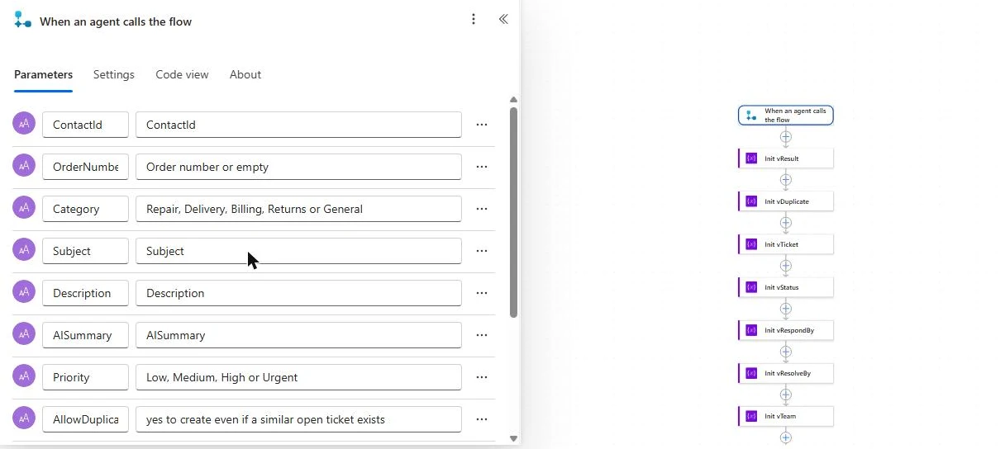
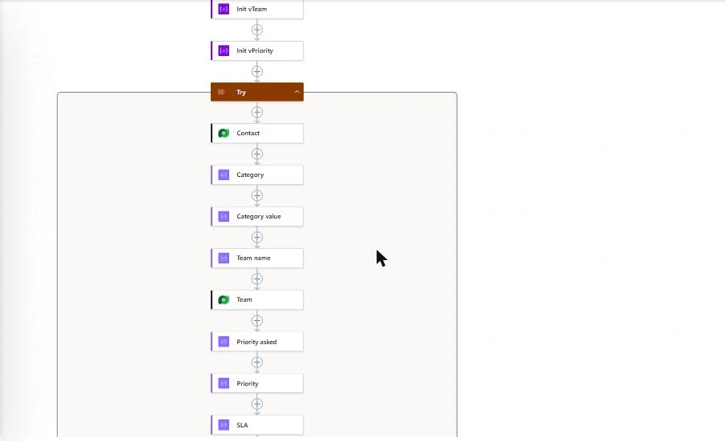
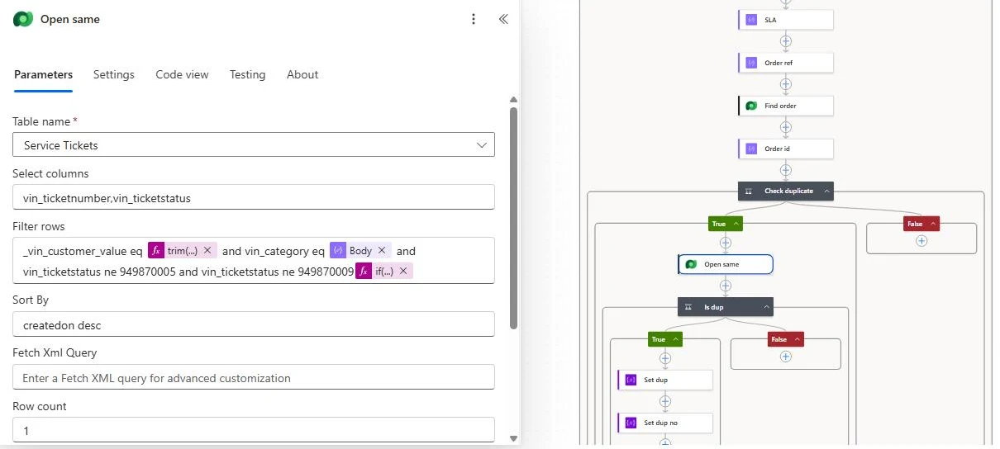
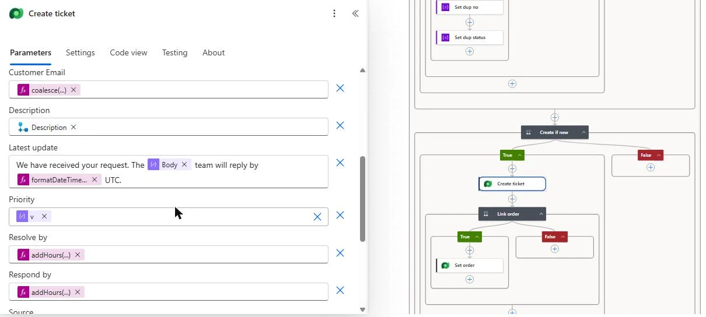
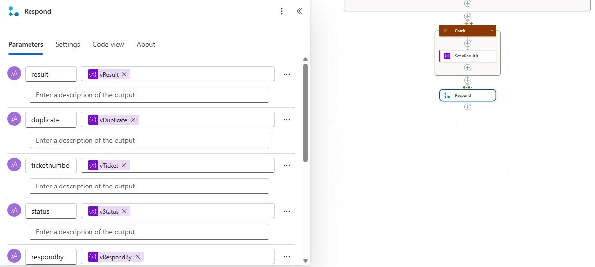
All 41 actions with expressions from source
| # | Action | Type | Key settings and expressions |
|---|---|---|---|
| 1 | Init vResult | Initialize variable | vResult (string) Duplicate |
| 2 | Init vDuplicate | Initialize variable | vDuplicate (string) No |
| 3 | Init vTicket | Initialize variable | vTicket (string) |
| 4 | Init vStatus | Initialize variable | vStatus (string) |
| 5 | Init vRespondBy | Initialize variable | vRespondBy (string) |
| 6 | Init vResolveBy | Initialize variable | vResolveBy (string) |
| 7 | Init vTeam | Initialize variable | vTeam (string) |
| 8 | Init vPriority | Initialize variable | vPriority (string) |
| 9 | Try | Scope | — |
| 10 | ↳ Contactinside Try | Dataverse · Get a row by ID | Table Contact recordId @trim(triggerBody()?['text'])$select contactid,fullname,emailaddress1,vin_isvip |
| 11 | ↳ Categoryinside Try | Compose | Value @if(contains(createArray('Repair','Delivery','Billing','Returns','General'),trim(coalesce(triggerBody()?['text_2'],''))),trim(triggerBody()?['text_2']),'General') |
| 12 | ↳ Category valueinside Try | Compose | Value @if(equals(outputs('Category'),'Repair'),949870000,if(equals(outputs('Category'),'Delivery'),949870001,if(equals(outputs('Category'),'Billing'),949870002,if(equals(outputs('Category'),'Returns'),949870003,949870004)))) |
| 13 | ↳ Team nameinside Try | Compose | Value @if(or(equals(outputs('Category'),'Repair'),equals(outputs('Category'),'Returns')),'Repairs',if(equals(outputs('Category'),'Billing'),'Billing','Logistics')) |
| 14 | ↳ Teaminside Try | Dataverse · List rows | Table Support Team $select vin_ccsupportteamid,vin_name$filter vin_name eq '@{outputs('Team_name')}'$top 1 |
| 15 | ↳ Priority askedinside Try | Compose | Value @if(contains(createArray('Low','Medium','High','Urgent'),trim(coalesce(triggerBody()?['text_6'],''))),trim(triggerBody()?['text_6']),'Medium') |
| 16 | ↳ Priorityinside Try | Compose | Value @if(and(equals(outputs('Contact')?['body/vin_isvip'],true),contains(createArray('Low','Medium'),outputs('Priority_asked'))),'High',outputs('Priority_asked')) |
| 17 | ↳ SLAinside Try | Compose | Value @json(if(equals(outputs('Priority'),'Low'),'{"v":949870000,"r":24,"s":120}',if(equals(outputs('Priority'),'Medium'),'{"v":949870001,"r":8,"s":72}',if(equals(outputs('Priority'),'High'),'{"v":949870002,"r":4,"s":24}','{"v":949870003,"r":1,"s":8}')))) |
| 18 | ↳ Order refinside Try | Compose | Value @toUpper(trim(coalesce(triggerBody()?['text_1'],''))) |
| 19 | ↳ Find orderinside Try | Dataverse · List rows | Table Customer Order $select vin_ccorderid,vin_ordernumber$filter vin_ordernumber eq '@{outputs('Order_ref')}' and _vin_customercontact_value eq @{trim(triggerBody()?['text'])}$top 1 |
| 20 | ↳ Order idinside Try | Compose | Value @if(greater(length(outputs('Find_order')?['body/value']),0),first(outputs('Find_order')?['body/value'])?['vin_ccorderid'],'') |
| 21 | ↳ Check duplicateinside Try | Condition | Condition {"and": [{"not": {"equals": ["@toLower(coalesce(triggerBody()?['text_7'],'no'))", "yes"]}}]} |
| 22 | ↳ Open sameinside Check duplicate · yes | Dataverse · List rows | Table Service Ticket $select vin_ticketnumber,vin_ticketstatus$filter _vin_customer_value eq @{trim(triggerBody()?['text'])} and vin_category eq @{outputs('Category_value')} and vin_ticketstatus ne 949870005 and vin_ticketstatus ne 949870009@{if(equals(outputs('Order_id'),''),'',concat(' and _vin_order_value eq ',outputs('Order_id')))}$orderby createdon desc$top 1 |
| 23 | ↳ Is dupinside Check duplicate · yes | Condition | Condition {"and": [{"greater": ["@length(outputs('Open_same')?['body/value'])", 0]}]} |
| 24 | ↳ Set dupinside Is dup · yes | Set variable | vDuplicate Yes |
| 25 | ↳ Set dup noinside Is dup · yes | Set variable | vTicket @{first(outputs('Open_same')?['body/value'])?['vin_ticketnumber']} |
| 26 | ↳ Set dup statusinside Is dup · yes | Set variable | vStatus @{first(outputs('Open_same')?['body/value'])?['vin_ticketstatus@OData.Community.Display.V1.FormattedValue']} |
| 27 | ↳ Create if newinside Try | Condition | Condition {"and": [{"not": {"equals": ["@variables('vDuplicate')", "Yes"]}}]} |
| 28 | ↳ Create ticketinside Create if new · yes | Dataverse · Add a new row | Table Service Ticket vin_aisummary @{triggerBody()?['text_5']}vin_category @outputs('Category_value')vin_Customer@odata.bind /contacts(@{trim(triggerBody()?['text'])})vin_customeremail @{coalesce(triggerBody()?['text_8'],outputs('Contact')?['body/emailaddress1'])}vin_description @{triggerBody()?['text_4']}vin_latestupdate We have received your request. The @{outputs('Team_name')} team will reply by @{formatDateTime(addHours(utcNow(),outputs('SLA')?['r']),'dd MMM yyyy, HH:mm')} UTC.vin_priority @outputs('SLA')?['v']vin_resolveby @{addHours(utcNow(),outputs('SLA')?['s'])}vin_respondby @{addHours(utcNow(),outputs('SLA')?['r'])}vin_source 949870000vin_subject @{triggerBody()?['text_3']}vin_SupportTeam@odata.bind /vin_ccsupportteams(@{first(outputs('Team')?['body/value'])?['vin_ccsupportteamid']})vin_ticketstatus 949870000 |
| 29 | ↳ Link orderinside Create if new · yes | Condition | Condition {"and": [{"not": {"equals": ["@outputs('Order_id')", ""]}}]} |
| 30 | ↳ Set orderinside Link order · yes | Dataverse · Update a row | Table Service Ticket recordId @outputs('Create_ticket')?['body/vin_ccserviceticketid']vin_Order@odata.bind /vin_ccorders(@{outputs('Order_id')}) |
| 31 | ↳ Get ticketinside Create if new · yes | Dataverse · Get a row by ID | Table Service Ticket recordId @outputs('Create_ticket')?['body/vin_ccserviceticketid']$select vin_ticketnumber,vin_respondby,vin_resolveby |
| 32 | ↳ Set noinside Create if new · yes | Set variable | vTicket @{outputs('Get_ticket')?['body/vin_ticketnumber']} |
| 33 | ↳ Set statusinside Create if new · yes | Set variable | vStatus Open |
| 34 | ↳ Set respondinside Create if new · yes | Set variable | vRespondBy @{formatDateTime(outputs('Get_ticket')?['body/vin_respondby'],'dd MMM yyyy, HH:mm')} UTC |
| 35 | ↳ Set resolveinside Create if new · yes | Set variable | vResolveBy @{formatDateTime(outputs('Get_ticket')?['body/vin_resolveby'],'dd MMM yyyy, HH:mm')} UTC |
| 36 | ↳ Set teaminside Create if new · yes | Set variable | vTeam @{outputs('Team_name')} |
| 37 | ↳ Set priorityinside Create if new · yes | Set variable | vPriority @{outputs('Priority')} |
| 38 | ↳ Set okinside Create if new · yes | Set variable | vResult Created |
| 39 | Catch | Scope | Run after Try (Failed/TimedOut) |
| 40 | ↳ Set vResult 0inside Catch | Set variable | vResult Error |
| 41 | Respond | Respond to the agent | Body {"result": "@{variables('vResult')}", "duplicate": "@{variables('vDuplicate')}", "ticketnumber": "@{variables('vTicket')}", "status": "@{variables('vStatus')}", "respondby": "@{variables('vRespondBy')}", "resolveby": "@{variables('vResolveBy')}", "team": "@{variables('vTeam')}", "priority": "@{variables('vPriority')}"}Run after Catch (Succeeded/Skipped) |
Escalate Ticket
- Trigger
- When an agent calls the flow (Skills)
- Tool description
- Escalates the customer's ticket to a person and alerts the support mailbox. Used by the Escalate topic only.
- Inputs
TicketNumber(string)ContactId(string)Reason(string)- Outputs (Respond to the agent)
result,team- Tables
- Service Ticket (R/W), Ticket Update (W)
- Called by
- Escalate
- Actions
- 17
- Source
src/Workflows/CustomerCare-EscalateTicket-2BD520A4-F6CD-F111-A05A-6045BD565BD6.json
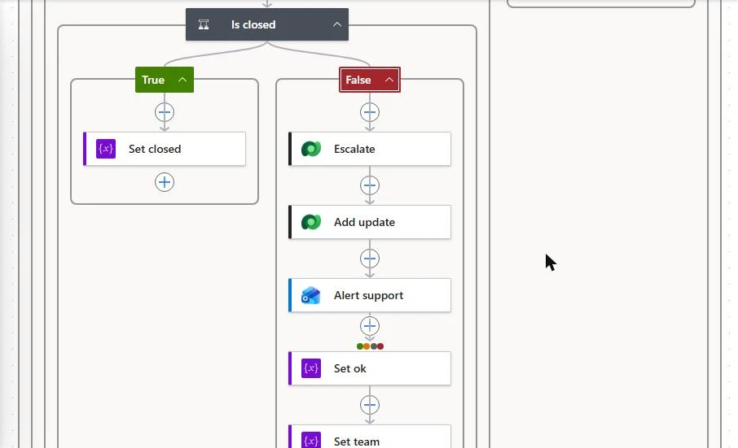
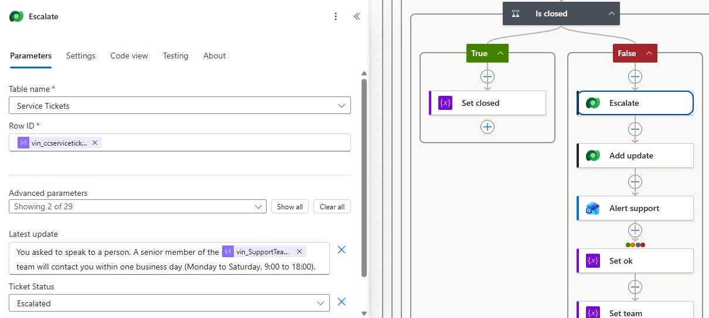
All 17 actions with expressions from source
| # | Action | Type | Key settings and expressions |
|---|---|---|---|
| 1 | Init r | Initialize variable | vResult (string) |
| 2 | Init t | Initialize variable | vTeam (string) |
| 3 | Try | Scope | — |
| 4 | ↳ Find ticketinside Try | Dataverse · List rows | Table Service Ticket $filter vin_ticketnumber eq '@{toUpper(trim(triggerBody()?['text']))}'$top 1$expand vin_SupportTeam($select=vin_name),vin_Customer($select=fullname,emailaddress1) |
| 5 | ↳ Tinside Try | Compose | Value @first(outputs('Find_ticket')?['body/value']) |
| 6 | ↳ Checkinside Try | Condition | Condition {"and": [{"equals": ["@and(not(empty(outputs('T'))),equals(toLower(coalesce(outputs('T')?['_vin_customer_value'],'')),toLower(trim(triggerBody()?['text_1']))))", true]}]} |
| 7 | ↳ Is closedinside Check · yes | Condition | Condition {"and": [{"equals": ["@outputs('T')?['vin_ticketstatus@OData.Community.Display.V1.FormattedValue']", "Closed"]}]} |
| 8 | ↳ Set closedinside Is closed · yes | Set variable | vResult Closed |
| 9 | ↳ Escalateinside Is closed · no | Dataverse · Update a row | Table Service Ticket recordId @outputs('T')?['vin_ccserviceticketid']vin_latestupdate You asked to speak to a person. A senior member of the @{outputs('T')?['vin_SupportTeam']?['vin_name']} team will contact you within one business day (Monday to Saturday, 9:00 to 18:00).vin_ticketstatus 949870008 |
| 10 | ↳ Add updateinside Is closed · no | Dataverse · Add a new row | Table Ticket Update vin_statusafter Escalatedvin_Ticket@odata.bind /vin_ccservicetickets(@{outputs('T')?['vin_ccserviceticketid']})vin_updatetext @{coalesce(triggerBody()?['text_2'],'No reason given.')}vin_name Customer asked for a personvin_updatedby @{outputs('T')?['vin_Customer']?['fullname']}vin_updatedon @{utcNow()}vin_visibletocustomer true |
| 11 | ↳ Alert supportinside Is closed · no | Outlook · Send an email (V2) | To @{parameters('CC Support Mailbox (vin_CCSupportMailbox)')}Subject Escalation: @{outputs('T')?['vin_ticketnumber']} – @{outputs('T')?['vin_subject']}Body <div style="font-family:Segoe UI,Arial,sans-serif;max-width:600px;margin:auto;border:1px solid #e1e4e8;border-radius:8px;overflow:hidden"><div style="background:#0b5cad;color:#ffffff;padding:16px 24px;font-size:18px;font-weight:600">Vink Electronics Customer Care</div><div style="padding:20px 24px;color:#1f2328;font-s…Importance High |
| 12 | ↳ Set okinside Is closed · no | Set variable | vResult EscalatedRun after Alert support (Succeeded/Failed/TimedOut/Skipped) |
| 13 | ↳ Set teaminside Is closed · no | Set variable | vTeam @{outputs('T')?['vin_SupportTeam']?['vin_name']} |
| 14 | ↳ Set nfinside Check · no | Set variable | vResult @{if(empty(outputs('T')),'NotFound','NotYours')} |
| 15 | Catch | Scope | Run after Try (Failed/TimedOut) |
| 16 | ↳ Set vResult 0inside Catch | Set variable | vResult Error |
| 17 | Respond | Respond to the agent | Body {"result": "@{variables('vResult')}", "team": "@{variables('vTeam')}"}Run after Catch (Succeeded/Skipped) |
Find Customer
- Trigger
- When an agent calls the flow (Skills)
- Tool description
- Finds and verifies a customer by email and order or customer number. Used by the Identify Customer topic only.
- Inputs
Email(string) Customer email addressOrderOrCustomerNumber(string) Order number (ORD-…) or customer number (CUST-…) used to verify the customer; can be empty- Outputs (Respond to the agent)
status,contactid,firstname,fullname,customernumber,isvip,openticketcount,openticketsummary- Tables
- Contact (R), Customer Order (R), Service Ticket (R)
- Called by
- Identify Customer
- Actions
- 27
- Source
src/Workflows/CustomerCare-FindCustomer-4476491C-F6CD-F111-A05A-6045BD565BD6.json
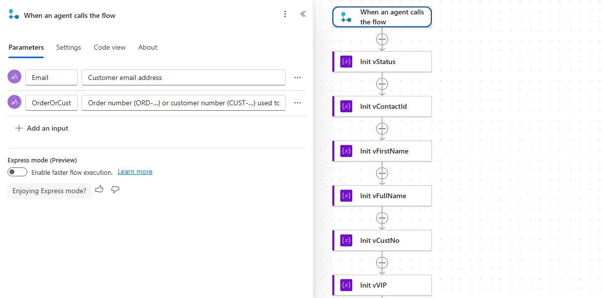
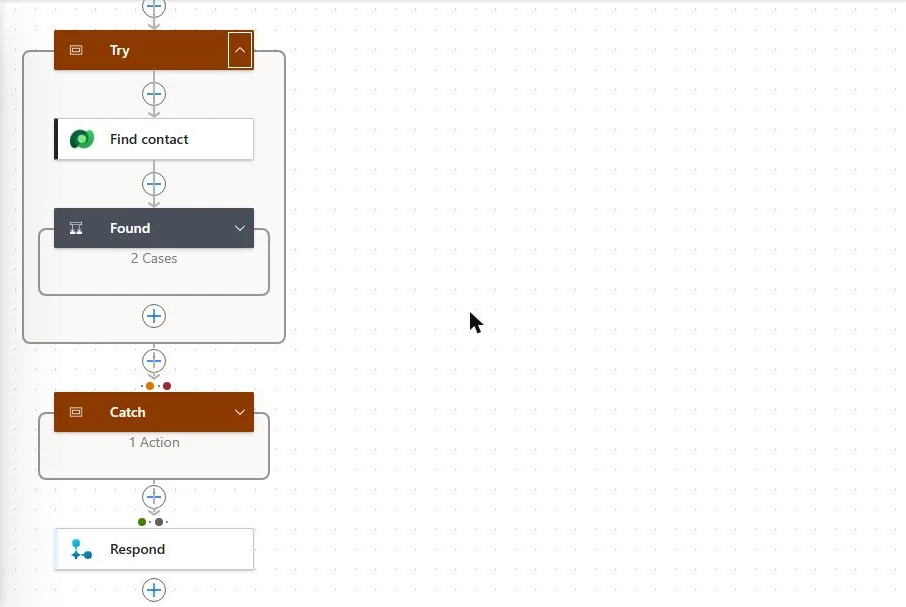
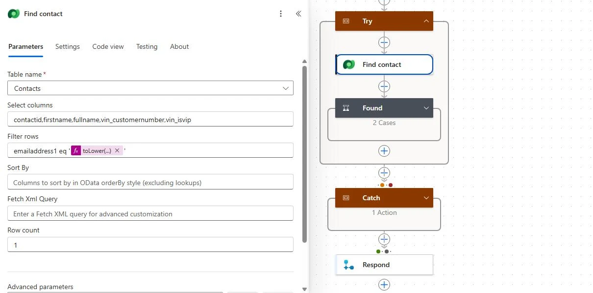
All 27 actions with expressions from source
| # | Action | Type | Key settings and expressions |
|---|---|---|---|
| 1 | Init vStatus | Initialize variable | vStatus (string) NotFound |
| 2 | Init vContactId | Initialize variable | vContactId (string) |
| 3 | Init vFirstName | Initialize variable | vFirstName (string) |
| 4 | Init vFullName | Initialize variable | vFullName (string) |
| 5 | Init vCustNo | Initialize variable | vCustNo (string) |
| 6 | Init vVIP | Initialize variable | vVIP (string) |
| 7 | Init vOpenCount | Initialize variable | vOpenCount (string) 0 |
| 8 | Init vOpenSummary | Initialize variable | vOpenSummary (string) |
| 9 | Try | Scope | — |
| 10 | ↳ Find contactinside Try | Dataverse · List rows | Table Contact $select contactid,firstname,fullname,vin_customernumber,vin_isvip$filter emailaddress1 eq '@{toLower(trim(triggerBody()?['text']))}'$top 1 |
| 11 | ↳ Foundinside Try | Condition | Condition {"and": [{"greater": ["@length(outputs('Find_contact')?['body/value'])", 0]}]} |
| 12 | ↳ Contactinside Found · yes | Compose | Value @first(outputs('Find_contact')?['body/value']) |
| 13 | ↳ Refinside Found · yes | Compose | Value @toUpper(trim(coalesce(triggerBody()?['text_1'],''))) |
| 14 | ↳ Find orderinside Found · yes | Dataverse · List rows | Table Customer Order $select vin_ordernumber$filter vin_ordernumber eq '@{outputs('Ref')}' and _vin_customercontact_value eq @{outputs('Contact')?['contactid']}$top 1 |
| 15 | ↳ Set statusinside Found · yes | Set variable | vStatus @if(empty(outputs('Ref')),'NeedVerification',if(or(greater(length(outputs('Find_order')?['body/value']),0),equals(outputs('Ref'),toUpper(coalesce(outputs('Contact')?['vin_customernumber'],'-')))),'Verified','NotVerified')) |
| 16 | ↳ Set idinside Found · yes | Set variable | vContactId @{outputs('Contact')?['contactid']} |
| 17 | ↳ Set firstinside Found · yes | Set variable | vFirstName @{outputs('Contact')?['firstname']} |
| 18 | ↳ Set fullinside Found · yes | Set variable | vFullName @{outputs('Contact')?['fullname']} |
| 19 | ↳ Set noinside Found · yes | Set variable | vCustNo @{outputs('Contact')?['vin_customernumber']} |
| 20 | ↳ Set vipinside Found · yes | Set variable | vVIP @{if(equals(outputs('Contact')?['vin_isvip'],true),'Yes','No')} |
| 21 | ↳ Open ticketsinside Found · yes | Dataverse · List rows | Table Service Ticket $select vin_ticketnumber,vin_subject,vin_ticketstatus$filter _vin_customer_value eq @{outputs('Contact')?['contactid']} and vin_ticketstatus ne 949870005 and vin_ticketstatus ne 949870009$orderby modifiedon desc |
| 22 | ↳ Linesinside Found · yes | Select | From @outputs('Open_tickets')?['body/value']Map @concat('- ',item()?['vin_ticketnumber'],': ',item()?['vin_subject'],' (',item()?['vin_ticketstatus@OData.Community.Display.V1.FormattedValue'],')') |
| 23 | ↳ Set countinside Found · yes | Set variable | vOpenCount @{length(outputs('Open_tickets')?['body/value'])} |
| 24 | ↳ Set summaryinside Found · yes | Set variable | vOpenSummary @{join(body('Lines'),decodeUriComponent('%0A'))} |
| 25 | Catch | Scope | Run after Try (Failed/TimedOut) |
| 26 | ↳ Set vStatus 0inside Catch | Set variable | vStatus Error |
| 27 | Respond | Respond to the agent | Body {"status": "@{variables('vStatus')}", "contactid": "@{variables('vContactId')}", "firstname": "@{variables('vFirstName')}", "fullname": "@{variables('vFullName')}", "customernumber": "@{variables('vCustNo')}", "isvip": "@{variables('vVIP')}", "openticketcount": "@{variables('vOpenCount')}", "openticketsummary": "@{var…Run after Catch (Succeeded/Skipped) |
Get Ticket Details
- Trigger
- When an agent calls the flow (Skills)
- Tool description
- Returns a ticket's status and timeline for its owner. Used by topics only.
- Inputs
TicketNumber(string)ContactId(string)- Outputs (Respond to the agent)
result,subject,status,priority,category,team,latest,raised,resolveby,overdue,timeline,canrate- Tables
- Service Ticket (R), Ticket Update (R)
- Called by
- Check Ticket Status
- Actions
- 34
- Source
src/Workflows/CustomerCare-GetTicketDetails-47822F8A-F6CD-F111-A05A-6045BD565BD6.json
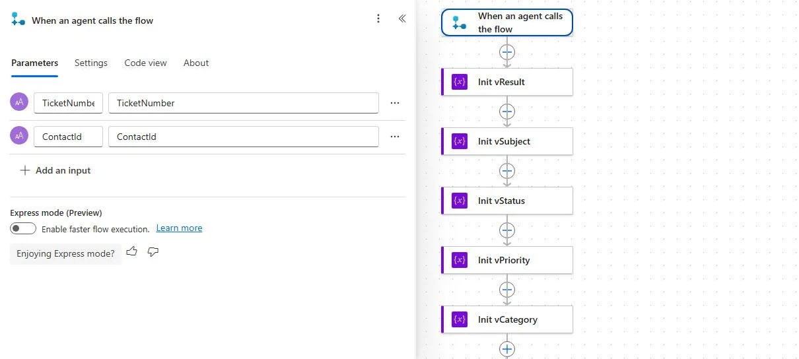
All 34 actions with expressions from source
| # | Action | Type | Key settings and expressions |
|---|---|---|---|
| 1 | Init vResult | Initialize variable | vResult (string) |
| 2 | Init vSubject | Initialize variable | vSubject (string) |
| 3 | Init vStatus | Initialize variable | vStatus (string) |
| 4 | Init vPriority | Initialize variable | vPriority (string) |
| 5 | Init vCategory | Initialize variable | vCategory (string) |
| 6 | Init vTeam | Initialize variable | vTeam (string) |
| 7 | Init vLatest | Initialize variable | vLatest (string) |
| 8 | Init vRaised | Initialize variable | vRaised (string) |
| 9 | Init vResolveBy | Initialize variable | vResolveBy (string) |
| 10 | Init vOverdue | Initialize variable | vOverdue (string) |
| 11 | Init vTimeline | Initialize variable | vTimeline (string) |
| 12 | Init vCanRate | Initialize variable | vCanRate (string) |
| 13 | Try | Scope | — |
| 14 | ↳ Find ticketinside Try | Dataverse · List rows | Table Service Ticket $filter vin_ticketnumber eq '@{toUpper(trim(triggerBody()?['text']))}'$top 1$expand vin_SupportTeam($select=vin_name),vin_Customer($select=fullname,emailaddress1) |
| 15 | ↳ Tinside Try | Compose | Value @first(outputs('Find_ticket')?['body/value']) |
| 16 | ↳ Checkinside Try | Condition | Condition {"and": [{"equals": ["@and(not(empty(outputs('T'))),equals(toLower(coalesce(outputs('T')?['_vin_customer_value'],'')),toLower(trim(triggerBody()?['text_1']))))", true]}]} |
| 17 | ↳ Updatesinside Check · yes | Dataverse · List rows | Table Ticket Update $select vin_name,vin_updatetext,vin_updatedon$filter _vin_ticket_value eq @{outputs('T')?['vin_ccserviceticketid']} and vin_visibletocustomer eq true$orderby vin_updatedon asc |
| 18 | ↳ Linesinside Check · yes | Select | From @outputs('Updates')?['body/value']Map @concat('- ',formatDateTime(coalesce(item()?['vin_updatedon'],utcNow()),'dd MMM, HH:mm'),' UTC: **',item()?['vin_name'],'**. ',item()?['vin_updatetext']) |
| 19 | ↳ Set rinside Check · yes | Set variable | vResult Found |
| 20 | ↳ Set sinside Check · yes | Set variable | vSubject @{outputs('T')?['vin_subject']} |
| 21 | ↳ Set stinside Check · yes | Set variable | vStatus @{outputs('T')?['vin_ticketstatus@OData.Community.Display.V1.FormattedValue']} |
| 22 | ↳ Set pinside Check · yes | Set variable | vPriority @{outputs('T')?['vin_priority@OData.Community.Display.V1.FormattedValue']} |
| 23 | ↳ Set cinside Check · yes | Set variable | vCategory @{outputs('T')?['vin_category@OData.Community.Display.V1.FormattedValue']} |
| 24 | ↳ Set tinside Check · yes | Set variable | vTeam @{outputs('T')?['vin_SupportTeam']?['vin_name']} |
| 25 | ↳ Set linside Check · yes | Set variable | vLatest @{outputs('T')?['vin_latestupdate']} |
| 26 | ↳ Set raisedinside Check · yes | Set variable | vRaised @{formatDateTime(outputs('T')?['createdon'],'dd MMM yyyy')} |
| 27 | ↳ Set rbinside Check · yes | Set variable | vResolveBy @{if(empty(outputs('T')?['vin_resolveby']),'',concat(formatDateTime(outputs('T')?['vin_resolveby'],'dd MMM yyyy, HH:mm'),' UTC'))} |
| 28 | ↳ Set oinside Check · yes | Set variable | vOverdue @{if(equals(outputs('T')?['vin_isoverdue'],true),'Yes','No')} |
| 29 | ↳ Set tlinside Check · yes | Set variable | vTimeline @{join(body('Lines'),decodeUriComponent('%0A'))} |
| 30 | ↳ Set rateinside Check · yes | Set variable | vCanRate @{if(and(contains(createArray('Resolved','Closed'),outputs('T')?['vin_ticketstatus@OData.Community.Display.V1.FormattedValue']),empty(outputs('T')?['vin_csatscore'])),'Yes','No')} |
| 31 | ↳ Set nfinside Check · no | Set variable | vResult @{if(empty(outputs('T')),'NotFound','NotYours')} |
| 32 | Catch | Scope | Run after Try (Failed/TimedOut) |
| 33 | ↳ Set vResult 0inside Catch | Set variable | vResult Error |
| 34 | Respond | Respond to the agent | Body {"result": "@{variables('vResult')}", "subject": "@{variables('vSubject')}", "status": "@{variables('vStatus')}", "priority": "@{variables('vPriority')}", "category": "@{variables('vCategory')}", "team": "@{variables('vTeam')}", "latest": "@{variables('vLatest')}", "raised": "@{variables('vRaised')}", "resolveby": "@{…Run after Catch (Succeeded/Skipped) |
List Customer Orders
- Trigger
- When an agent calls the flow (Skills)
- Tool description
- Lists the verified customer's orders. Used by topics only.
- Inputs
ContactId(string) Dataverse contact id of the verified customer- Outputs (Respond to the agent)
ordercount,orderchoices,orderlist- Tables
- Customer Order (R)
- Called by
- New Ticket, Track an Order
- Actions
- 13
- Source
src/Workflows/CustomerCare-ListCustomerOrders-B3CF3F49-F6CD-F111-A05A-6045BD565BD6.json
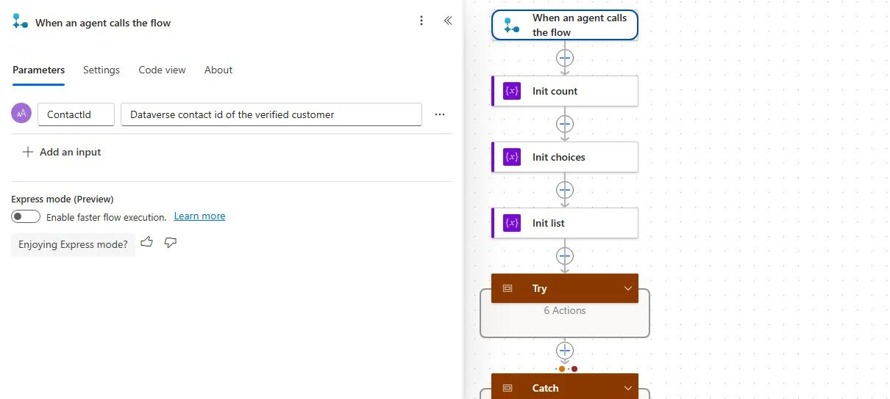
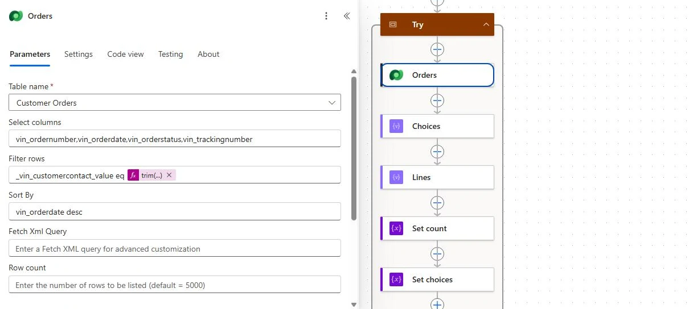
All 13 actions with expressions from source
| # | Action | Type | Key settings and expressions |
|---|---|---|---|
| 1 | Init count | Initialize variable | vCount (string) 0 |
| 2 | Init choices | Initialize variable | vChoices (string) |
| 3 | Init list | Initialize variable | vList (string) |
| 4 | Try | Scope | — |
| 5 | ↳ Ordersinside Try | Dataverse · List rows | Table Customer Order $select vin_ordernumber,vin_orderdate,vin_orderstatus,vin_trackingnumber$filter _vin_customercontact_value eq @{trim(triggerBody()?['text'])}$orderby vin_orderdate desc$expand vin_Product($select=vin_name,vin_warrantymonths) |
| 6 | ↳ Choicesinside Try | Select | From @outputs('Orders')?['body/value']Map @concat(item()?['vin_ordernumber'],'~',item()?['vin_ordernumber'],' · ',coalesce(item()?['vin_Product']?['vin_name'],'Order'),' · ',formatDateTime(item()?['vin_orderdate'],'dd MMM yyyy'),' · ',item()?['vin_orderstatus@OData.Community.Display.V1.FormattedValue']) |
| 7 | ↳ Linesinside Try | Select | From @outputs('Orders')?['body/value']Map @concat('- **',item()?['vin_ordernumber'],'**: ',coalesce(item()?['vin_Product']?['vin_name'],'Order'),', ',formatDateTime(item()?['vin_orderdate'],'dd MMM yyyy'),', ',item()?['vin_orderstatus@OData.Community.Display.V1.FormattedValue'],if(empty(item()?['vin_trackingnumber']),'',concat(' (tracking ',item()?['vin_track… |
| 8 | ↳ Set countinside Try | Set variable | vCount @{length(outputs('Orders')?['body/value'])} |
| 9 | ↳ Set choicesinside Try | Set variable | vChoices @{join(body('Choices'),'|')} |
| 10 | ↳ Set listinside Try | Set variable | vList @{join(body('Lines'),decodeUriComponent('%0A'))} |
| 11 | Catch | Scope | Run after Try (Failed/TimedOut) |
| 12 | ↳ Set vCount 0inside Catch | Set variable | vCount -1 |
| 13 | Respond | Respond to the agent | Body {"ordercount": "@{variables('vCount')}", "orderchoices": "@{variables('vChoices')}", "orderlist": "@{variables('vList')}"}Run after Catch (Succeeded/Skipped) |
List Customer Tickets
- Trigger
- When an agent calls the flow (Skills)
- Tool description
- Lists the verified customer's tickets. Used by topics only.
- Inputs
ContactId(string)Scope(string) open (default) or all- Outputs (Respond to the agent)
ticketcount,ticketchoices,ticketlist- Tables
- Service Ticket (R)
- Called by
- Check Ticket Status, Escalate, Rate a Ticket
- Actions
- 13
- Source
src/Workflows/CustomerCare-ListCustomerTickets-C4CF3F49-F6CD-F111-A05A-6045BD565BD6.json
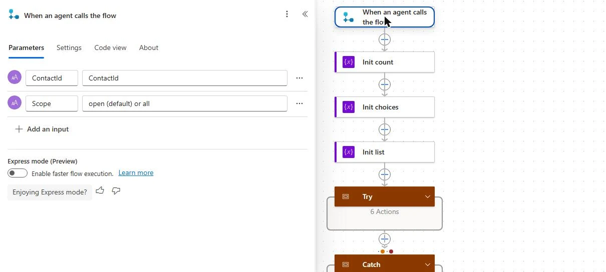
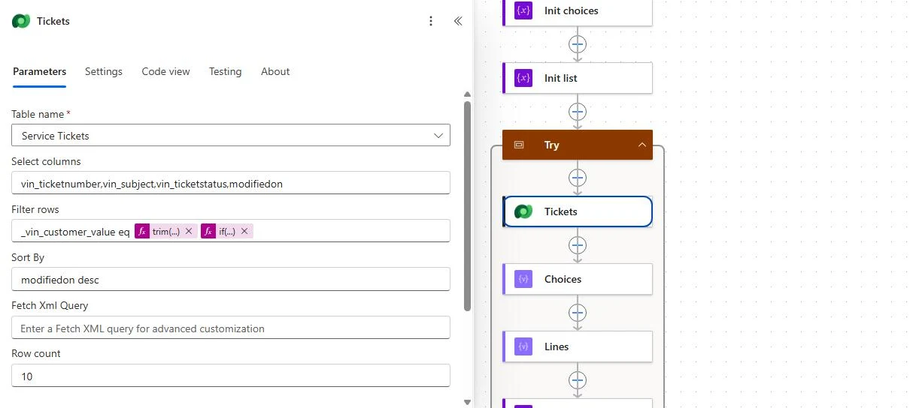
All 13 actions with expressions from source
| # | Action | Type | Key settings and expressions |
|---|---|---|---|
| 1 | Init count | Initialize variable | vCount (string) 0 |
| 2 | Init choices | Initialize variable | vChoices (string) |
| 3 | Init list | Initialize variable | vList (string) |
| 4 | Try | Scope | — |
| 5 | ↳ Ticketsinside Try | Dataverse · List rows | Table Service Ticket $select vin_ticketnumber,vin_subject,vin_ticketstatus,modifiedon$filter _vin_customer_value eq @{trim(triggerBody()?['text'])}@{if(equals(toLower(coalesce(triggerBody()?['text_1'],'open')),'all'),'',' and vin_ticketstatus ne 949870005')}$orderby modifiedon desc$top 10 |
| 6 | ↳ Choicesinside Try | Select | From @outputs('Tickets')?['body/value']Map @concat(item()?['vin_ticketnumber'],'~',item()?['vin_ticketnumber'],' · ',item()?['vin_subject'],' · ',item()?['vin_ticketstatus@OData.Community.Display.V1.FormattedValue']) |
| 7 | ↳ Linesinside Try | Select | From @outputs('Tickets')?['body/value']Map @concat('- **',item()?['vin_ticketnumber'],'**: ',item()?['vin_subject'],' (',item()?['vin_ticketstatus@OData.Community.Display.V1.FormattedValue'],')') |
| 8 | ↳ Set countinside Try | Set variable | vCount @{length(outputs('Tickets')?['body/value'])} |
| 9 | ↳ Set choicesinside Try | Set variable | vChoices @{join(body('Choices'),'|')} |
| 10 | ↳ Set listinside Try | Set variable | vList @{join(body('Lines'),decodeUriComponent('%0A'))} |
| 11 | Catch | Scope | Run after Try (Failed/TimedOut) |
| 12 | ↳ Set vCount 0inside Catch | Set variable | vCount -1 |
| 13 | Respond | Respond to the agent | Body {"ticketcount": "@{variables('vCount')}", "ticketchoices": "@{variables('vChoices')}", "ticketlist": "@{variables('vList')}"}Run after Catch (Succeeded/Skipped) |
RMA Process
- Trigger
- When an agent calls the flow (Skills)
- Tool description
- Runs the fixed RMA (return authorisation) process for a confirmed warranty claim: verifies the warranty from the order serial number, creates the warranty claim, service ticket and courier booking, and emails the return label. Only use it after the customer has confirmed the claim summary in the Warranty Claim topic.
- Inputs
SerialNumber(string)PurchaseDate(string)FaultDescription(string)FaultSummary(string)CustomerEmail(string)CustomerName(string)ContactId(string) Dataverse contact id of the verified customer (optional)- Outputs (Respond to the agent)
inwarranty,claimnumber,rmanumber,ticketnumber,warrantyenddate,outcome- Tables
- Customer Order (R), Warranty Claim (W), Service Ticket (R/W)
- Called by
- Warranty Claim
- Actions
- 34
- Source
src/Workflows/CustomerCare-RMAProcess-1346CD27-1ACD-F111-A05A-6045BD565BD6.json
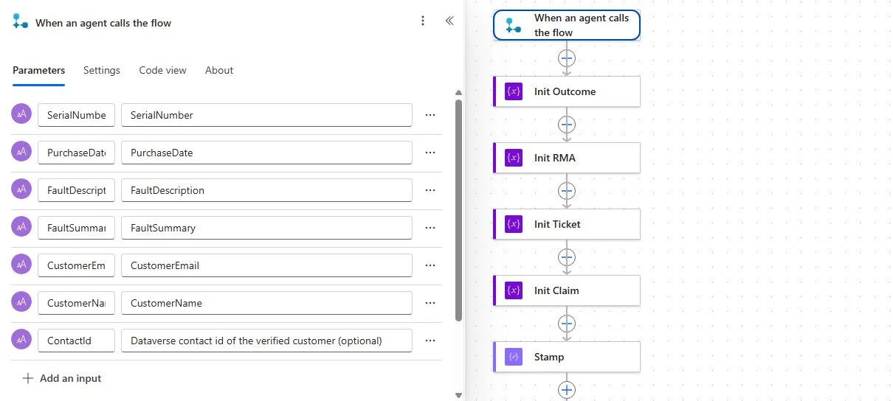
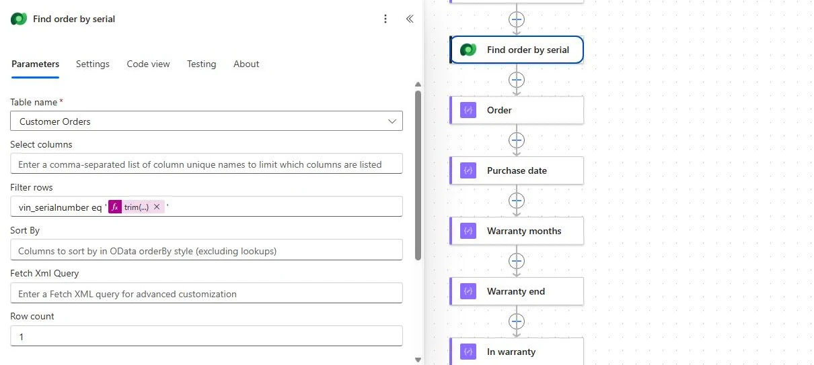
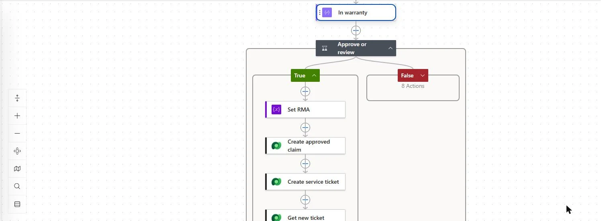
All 34 actions with expressions from source
| # | Action | Type | Key settings and expressions |
|---|---|---|---|
| 1 | Init Outcome | Initialize variable | vOutcome (string) |
| 2 | Init RMA | Initialize variable | vRMA (string) |
| 3 | Init Ticket | Initialize variable | vTicket (string) |
| 4 | Init Claim | Initialize variable | vClaim (string) |
| 5 | Stamp | Compose | Value @formatDateTime(utcNow(),'yyMMddHHmmss') |
| 6 | Find order by serial | Dataverse · List rows | Table Customer Order $filter vin_serialnumber eq '@{trim(triggerBody()?['text'])}'$top 1$expand vin_Product($select=vin_name,vin_warrantymonths) |
| 7 | Order | Compose | Value @first(outputs('Find_order_by_serial')?['body/value']) |
| 8 | Purchase date | Compose | Value @if(empty(outputs('Order')), if(empty(triggerBody()?['text_1']), '1900-01-01', triggerBody()?['text_1']), outputs('Order')?['vin_orderdate']) |
| 9 | Warranty months | Compose | Value @if(empty(outputs('Order')), 12, int(outputs('Order')?['vin_Product']?['vin_warrantymonths'])) |
| 10 | Warranty end | Compose | Value @addToTime(outputs('Purchase_date'), outputs('Warranty_months'), 'Month', 'yyyy-MM-dd') |
| 11 | In warranty | Compose | Value @less(ticks(utcNow()), ticks(outputs('Warranty_end'))) |
| 12 | Approve or review | Condition | Condition {"and": [{"equals": ["@empty(outputs('Order'))", false]}, {"equals": ["@outputs('In_warranty')", true]}]} |
| 13 | ↳ Set RMAinside Approve or review · yes | Set variable | vRMA RMA-@{outputs('Stamp')} |
| 14 | ↳ Create approved claiminside Approve or review · yes | Dataverse · Add a new row | Table Warranty Claim vin_claimnumber CLM-@{outputs('Stamp')}vin_claimstatus 949870001vin_customeremail @{triggerBody()?['text_4']}vin_faultdescription @{triggerBody()?['text_2']}vin_faultsummary @{triggerBody()?['text_3']}vin_inwarranty truevin_Order@odata.bind /vin_ccorders(@{outputs('Order')?['vin_ccorderid']})vin_purchasedate @{outputs('Purchase_date')}vin_rmanumber @variables('vRMA')vin_serialnumber @{triggerBody()?['text']} |
| 15 | ↳ Create service ticketinside Approve or review · yes | Dataverse · Add a new row | Table Service Ticket vin_aisummary @{triggerBody()?['text_3']}vin_category 949870000vin_courierbooking COUR-@{outputs('Stamp')}vin_customeremail @{triggerBody()?['text_4']}vin_description @{triggerBody()?['text_2']}vin_latestupdate Warranty claim approved (RMA @{variables('vRMA')}). Please send the product back using the prepaid return label we emailed.vin_priority 949870001vin_Order@odata.bind /vin_ccorders(@{outputs('Order')?['vin_ccorderid']})vin_source 949870000vin_subject Warranty claim: @{coalesce(outputs('Order')?['vin_Product']?['vin_name'],'product')} (@{triggerBody()?['text']})vin_ticketstatus 949870001vin_WarrantyClaim@odata.bind /vin_ccwarrantyclaims(@{outputs('Create_approved_claim')?['body/vin_ccwarrantyclaimid']}) |
| 16 | ↳ Set ticketinside Approve or review · yes | Set variable | vTicket @{outputs('Get_new_ticket')?['body/vin_ticketnumber']} |
| 17 | ↳ Set claim yesinside Approve or review · yes | Set variable | vClaim CLM-@{outputs('Stamp')} |
| 18 | ↳ Email return labelinside Approve or review · yes | Outlook · Send an email (V2) | To @{if(empty(parameters('CC Customer Email Override (vin_CCCustomerEmailOverride)')),triggerBody()?['text_4'],parameters('CC Customer Email Override (vin_CCCustomerEmailOverride)'))}Subject Your return label: @{variables('vRMA')} (Vink Electronics)Body <p>Hello @{triggerBody()?['text_5']},</p><p>Good news: your <b>@{outputs('Order')?['vin_Product']?['vin_name']}</b> (serial @{triggerBody()?['text']}) is under warranty until @{outputs('Warranty_end')}, so we've approved your claim.</p><ul><li>Claim number: @{variables('vClaim')}</li><li>RMA number: <b>@{variables('vR…Importance Normal |
| 19 | ↳ Set outcome yesinside Approve or review · yes | Set variable | vOutcome Approved. The product is under warranty until @{outputs('Warranty_end')}. RMA @{variables('vRMA')} created and courier collection booked. The return label is being emailed. |
| 20 | ↳ Get new ticketinside Approve or review · yes | Dataverse · Get a row by ID | Table Service Ticket recordId @outputs('Create_service_ticket')?['body/vin_ccserviceticketid']$select vin_ticketnumber |
| 21 | ↳ Link customerinside Approve or review · yes | Condition | Condition {"and": [{"not": {"equals": ["@coalesce(triggerBody()?['text_6'],outputs('Order')?['_vin_customercontact_value'],'')", ""]}}]} |
| 22 | ↳ Ticket customerinside Link customer · yes | Dataverse · Update a row | Table Service Ticket recordId @outputs('Create_service_ticket')?['body/vin_ccserviceticketid']vin_Customer@odata.bind /contacts(@{coalesce(triggerBody()?['text_6'],outputs('Order')?['_vin_customercontact_value'],'')}) |
| 23 | ↳ Claim customerinside Link customer · yes | Dataverse · Update a row | Table Warranty Claim recordId @outputs('Create_approved_claim')?['body/vin_ccwarrantyclaimid']vin_Customer@odata.bind /contacts(@{coalesce(triggerBody()?['text_6'],outputs('Order')?['_vin_customercontact_value'],'')}) |
| 24 | ↳ Create review claiminside Approve or review · no | Dataverse · Add a new row | Table Warranty Claim vin_claimnumber CLM-@{outputs('Stamp')}vin_claimstatus 949870000vin_customeremail @{triggerBody()?['text_4']}vin_faultdescription @{triggerBody()?['text_2']}vin_faultsummary @{triggerBody()?['text_3']}vin_inwarranty falsevin_serialnumber @{triggerBody()?['text']} |
| 25 | ↳ Set claim noinside Approve or review · no | Set variable | vClaim CLM-@{outputs('Stamp')} |
| 26 | ↳ Set outcome noinside Approve or review · no | Set variable | vOutcome @{if(empty(outputs('Order')), 'No order was found for this serial number, so the warranty could not be verified. A specialist will review the claim.', concat('The warranty ended on ', outputs('Warranty_end'), '. The claim was logged for review; a paid repair quote can be offered.'))} |
| 27 | ↳ Create review ticketinside Approve or review · no | Dataverse · Add a new row | Table Service Ticket vin_aisummary @{triggerBody()?['text_3']}vin_category 949870000vin_customeremail @{triggerBody()?['text_4']}vin_description @{triggerBody()?['text_2']}vin_latestupdate Your claim needs a manual warranty review. A specialist will contact you within one business day.vin_priority 949870001vin_source 949870000vin_subject Warranty review: @{coalesce(outputs('Order')?['vin_Product']?['vin_name'],'product')} (@{triggerBody()?['text']})vin_ticketstatus 949870000 |
| 28 | ↳ Get review ticketinside Approve or review · no | Dataverse · Get a row by ID | Table Service Ticket recordId @outputs('Create_review_ticket')?['body/vin_ccserviceticketid']$select vin_ticketnumber |
| 29 | ↳ Link review customerinside Approve or review · no | Condition | Condition {"and": [{"not": {"equals": ["@coalesce(triggerBody()?['text_6'],outputs('Order')?['_vin_customercontact_value'],'')", ""]}}]} |
| 30 | ↳ Review customerinside Link review customer · yes | Dataverse · Update a row | Table Service Ticket recordId @outputs('Create_review_ticket')?['body/vin_ccserviceticketid']vin_Customer@odata.bind /contacts(@{coalesce(triggerBody()?['text_6'],outputs('Order')?['_vin_customercontact_value'],'')}) |
| 31 | ↳ Set review ticketinside Approve or review · no | Set variable | vTicket @{outputs('Get_review_ticket')?['body/vin_ticketnumber']} |
| 32 | ↳ Link review orderinside Approve or review · no | Condition | Condition {"and": [{"not": {"equals": ["@coalesce(outputs('Order')?['vin_ccorderid'],'')", ""]}}]} |
| 33 | ↳ Review orderinside Link review order · yes | Dataverse · Update a row | Table Service Ticket recordId @outputs('Create_review_ticket')?['body/vin_ccserviceticketid']vin_Order@odata.bind /vin_ccorders(@{outputs('Order')?['vin_ccorderid']}) |
| 34 | Respond to the agent | Respond to the agent | Body {"inwarranty": "@{if(empty(variables('vRMA')),'No','Yes')}", "claimnumber": "@{variables('vClaim')}", "rmanumber": "@{variables('vRMA')}", "ticketnumber": "@{variables('vTicket')}", "warrantyenddate": "@{outputs('Warranty_end')}", "outcome": "@{variables('vOutcome')}"}Run after Approve or review (Succeeded/Failed) |
Record CSAT
- Trigger
- When an agent calls the flow (Skills)
- Tool description
- Saves a 1-5 satisfaction rating on a resolved ticket. Used by the Rate a Ticket topic only.
- Inputs
TicketNumber(string)ContactId(string)Score(string) 1 to 5Comment(string)- Outputs (Respond to the agent)
result- Tables
- Service Ticket (R/W)
- Called by
- Rate a Ticket
- Actions
- 16
- Source
src/Workflows/CustomerCare-RecordCSAT-789119AA-F6CD-F111-A05A-6045BD565BD6.json
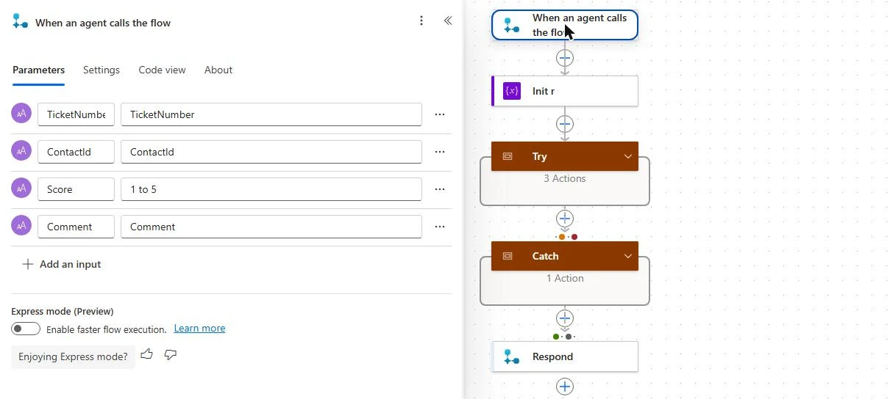
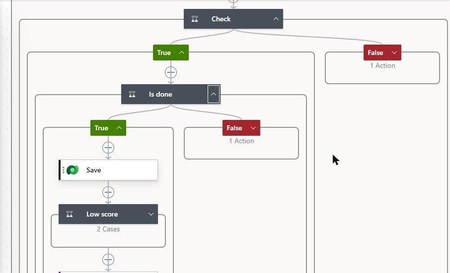
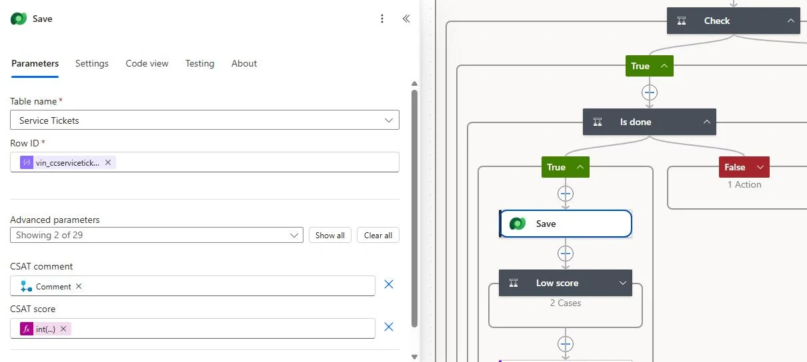
All 16 actions with expressions from source
| # | Action | Type | Key settings and expressions |
|---|---|---|---|
| 1 | Init r | Initialize variable | vResult (string) |
| 2 | Try | Scope | — |
| 3 | ↳ Find ticketinside Try | Dataverse · List rows | Table Service Ticket $filter vin_ticketnumber eq '@{toUpper(trim(triggerBody()?['text']))}'$top 1$expand vin_SupportTeam($select=vin_name),vin_Customer($select=fullname,emailaddress1) |
| 4 | ↳ Tinside Try | Compose | Value @first(outputs('Find_ticket')?['body/value']) |
| 5 | ↳ Checkinside Try | Condition | Condition {"and": [{"equals": ["@and(not(empty(outputs('T'))),equals(toLower(coalesce(outputs('T')?['_vin_customer_value'],'')),toLower(trim(triggerBody()?['text_1']))))", true]}]} |
| 6 | ↳ Is doneinside Check · yes | Condition | Condition {"or": [{"equals": ["@outputs('T')?['vin_ticketstatus@OData.Community.Display.V1.FormattedValue']", "Resolved"]}, {"equals": ["@outputs('T')?['vin_ticketstatus@OData.Community.Display.V1.FormattedValue']", "Closed"]}]} |
| 7 | ↳ Saveinside Is done · yes | Dataverse · Update a row | Table Service Ticket recordId @outputs('T')?['vin_ccserviceticketid']vin_csatcomment @{triggerBody()?['text_3']}vin_csatscore @int(triggerBody()?['text_2']) |
| 8 | ↳ Low scoreinside Is done · yes | Condition | Condition {"and": [{"lessOrEquals": ["@int(triggerBody()?['text_2'])", 2]}]} |
| 9 | ↳ Alert lowinside Low score · yes | Outlook · Send an email (V2) | To @{parameters('CC Support Mailbox (vin_CCSupportMailbox)')}Subject Low satisfaction (@{triggerBody()?['text_2']}/5): @{outputs('T')?['vin_ticketnumber']}Body <div style="font-family:Segoe UI,Arial,sans-serif;max-width:600px;margin:auto;border:1px solid #e1e4e8;border-radius:8px;overflow:hidden"><div style="background:#0b5cad;color:#ffffff;padding:16px 24px;font-size:18px;font-weight:600">Vink Electronics Customer Care</div><div style="padding:20px 24px;color:#1f2328;font-s…Importance Normal |
| 10 | ↳ Email handledinside Low score · yes | Compose | Value handledRun after Alert low (Succeeded/Failed/TimedOut/Skipped) |
| 11 | ↳ Set okinside Is done · yes | Set variable | vResult Saved |
| 12 | ↳ Set openinside Is done · no | Set variable | vResult NotResolved |
| 13 | ↳ Set nfinside Check · no | Set variable | vResult @{if(empty(outputs('T')),'NotFound','NotYours')} |
| 14 | Catch | Scope | Run after Try (Failed/TimedOut) |
| 15 | ↳ Set vResult 0inside Catch | Set variable | vResult Error |
| 16 | Respond | Respond to the agent | Body {"result": "@{variables('vResult')}"}Run after Catch (Succeeded/Skipped) |
Register Customer
- Trigger
- When an agent calls the flow (Skills)
- Tool description
- Registers a new customer. Used by the Identify Customer topic only.
- Inputs
FirstName(string)LastName(string)Email(string)Phone(string)- Outputs (Respond to the agent)
status,contactid,customernumber,fullname- Tables
- Contact (R/W)
- Called by
- Identify Customer
- Actions
- 22
- Source
src/Workflows/CustomerCare-RegisterCustomer-82E5E122-F6CD-F111-A05A-6045BD565BD6.json
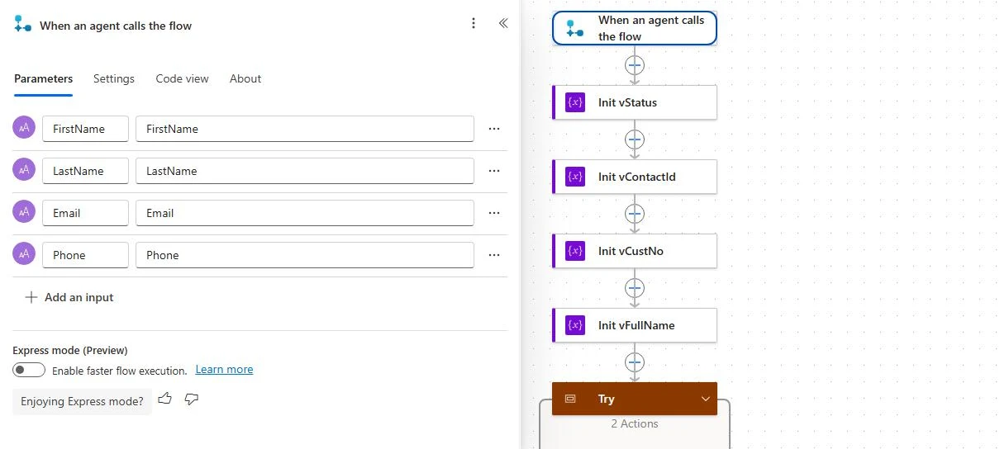
All 22 actions with expressions from source
| # | Action | Type | Key settings and expressions |
|---|---|---|---|
| 1 | Init vStatus | Initialize variable | vStatus (string) |
| 2 | Init vContactId | Initialize variable | vContactId (string) |
| 3 | Init vCustNo | Initialize variable | vCustNo (string) |
| 4 | Init vFullName | Initialize variable | vFullName (string) |
| 5 | Try | Scope | — |
| 6 | ↳ Existinginside Try | Dataverse · List rows | Table Contact $select contactid,fullname,vin_customernumber$filter emailaddress1 eq '@{toLower(trim(triggerBody()?['text_2']))}'$top 1 |
| 7 | ↳ Already existsinside Try | Condition | Condition {"and": [{"greater": ["@length(outputs('Existing')?['body/value'])", 0]}]} |
| 8 | ↳ Set existsinside Already exists · yes | Set variable | vStatus Exists |
| 9 | ↳ Set eidinside Already exists · yes | Set variable | vContactId @{first(outputs('Existing')?['body/value'])?['contactid']} |
| 10 | ↳ Set enoinside Already exists · yes | Set variable | vCustNo @{first(outputs('Existing')?['body/value'])?['vin_customernumber']} |
| 11 | ↳ Set enameinside Already exists · yes | Set variable | vFullName @{first(outputs('Existing')?['body/value'])?['fullname']} |
| 12 | ↳ Create contactinside Already exists · no | Dataverse · Add a new row | Table Contact lastname @{trim(triggerBody()?['text_1'])}telephone1 @{triggerBody()?['text_3']}description Registered by the Vink Customer Care Agent.emailaddress1 @{toLower(trim(triggerBody()?['text_2']))}firstname @{trim(triggerBody()?['text'])}vin_customersince @{formatDateTime(utcNow(),'yyyy-MM-dd')} |
| 13 | ↳ Get contactinside Already exists · no | Dataverse · Get a row by ID | Table Contact recordId @outputs('Create_contact')?['body/contactid']$select contactid,fullname,vin_customernumber |
| 14 | ↳ Set createdinside Already exists · no | Set variable | vStatus Created |
| 15 | ↳ Set cidinside Already exists · no | Set variable | vContactId @{outputs('Get_contact')?['body/contactid']} |
| 16 | ↳ Set cnoinside Already exists · no | Set variable | vCustNo @{outputs('Get_contact')?['body/vin_customernumber']} |
| 17 | ↳ Set cnameinside Already exists · no | Set variable | vFullName @{outputs('Get_contact')?['body/fullname']} |
| 18 | ↳ Welcome emailinside Already exists · no | Outlook · Send an email (V2) | To @{if(empty(parameters('CC Customer Email Override (vin_CCCustomerEmailOverride)')),triggerBody()?['text_2'],parameters('CC Customer Email Override (vin_CCCustomerEmailOverride)'))}Subject Welcome to Vink Customer Care, @{trim(triggerBody()?['text'])}Body <div style="font-family:Segoe UI,Arial,sans-serif;max-width:600px;margin:auto;border:1px solid #e1e4e8;border-radius:8px;overflow:hidden"><div style="background:#0b5cad;color:#ffffff;padding:16px 24px;font-size:18px;font-weight:600">Vink Electronics Customer Care</div><div style="padding:20px 24px;color:#1f2328;font-s…Importance Normal |
| 19 | ↳ Email handledinside Already exists · no | Compose | Value @{if(equals(actions('Welcome_email')?['status'],'Succeeded'),'sent','not sent')}Run after Welcome email (Succeeded/Failed/TimedOut/Skipped) |
| 20 | Catch | Scope | Run after Try (Failed/TimedOut) |
| 21 | ↳ Set vStatus 0inside Catch | Set variable | vStatus Error |
| 22 | Respond | Respond to the agent | Body {"status": "@{variables('vStatus')}", "contactid": "@{variables('vContactId')}", "customernumber": "@{variables('vCustNo')}", "fullname": "@{variables('vFullName')}"}Run after Catch (Succeeded/Skipped) |
Repair Update
- Trigger
- When an agent calls the flow (Skills)
- Tool description
- Use when a returned product has been scanned at the warehouse (the Warehouse scan received trigger). Takes the service ticket number, records the repair result and sets the ticket to Repaired or Replaced. The customer is emailed automatically by the Ticket Status Changed flow.
- Inputs
TicketNumber(string) Service ticket number, for example TKT-1008- Outputs (Respond to the agent)
outcome- Tables
- Service Ticket (R/W)
- Called by
- Agent orchestrator (instructions) / event trigger
- Actions
- 9
- Source
src/Workflows/CustomerCare-RepairUpdate-14E06B14-21CD-F111-A05A-6045BD565BD6.json
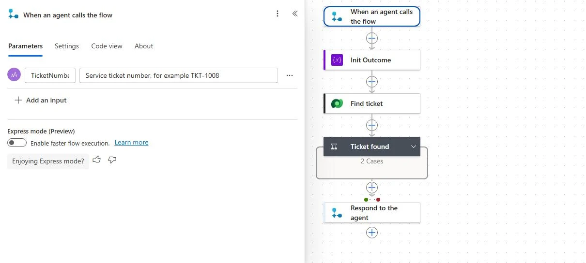
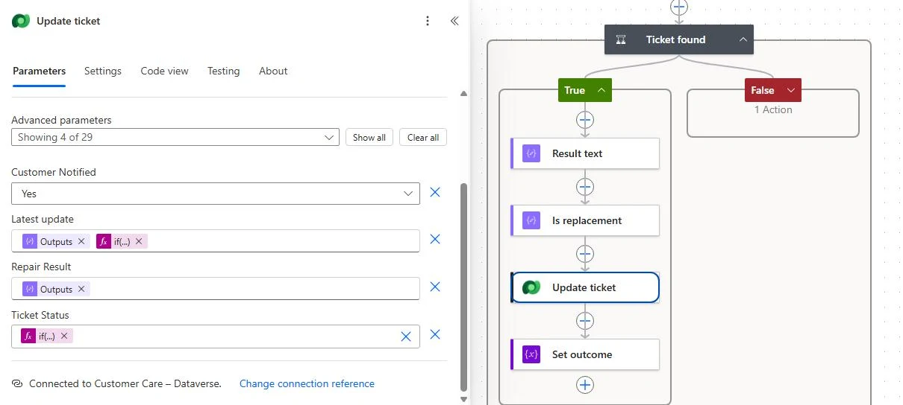
All 9 actions with expressions from source
| # | Action | Type | Key settings and expressions |
|---|---|---|---|
| 1 | Init Outcome | Initialize variable | vOutcome (string) |
| 2 | Find ticket | Dataverse · List rows | Table Service Ticket $filter vin_ticketnumber eq '@{trim(triggerBody()?['text'])}'$top 1$expand vin_WarrantyClaim($select=vin_claimnumber,vin_rmanumber,vin_serialnumber,vin_faultsummary) |
| 3 | Ticket found | Condition | Condition {"and": [{"equals": ["@empty(first(outputs('Find_ticket')?['body/value']))", false]}]} |
| 4 | ↳ Result textinside Ticket found · yes | Compose | Value @if(empty(first(outputs('Find_ticket')?['body/value'])?['vin_repairresult']), 'Inspected and repaired by our technician; unit tested and working normally.', first(outputs('Find_ticket')?['body/value'])?['vin_repairresult']) |
| 5 | ↳ Is replacementinside Ticket found · yes | Compose | Value @or(startsWith(toLower(outputs('Result_text')),'replacement'),contains(toLower(outputs('Result_text')),'replaced with a new unit')) |
| 6 | ↳ Update ticketinside Ticket found · yes | Dataverse · Update a row | Table Service Ticket recordId @{first(outputs('Find_ticket')?['body/value'])?['vin_ccserviceticketid']}vin_customernotified truevin_latestupdate @{outputs('Result_text')} @{if(outputs('Is_replacement'),'Your replacement is on its way.','Your product is on its way back to you.')}vin_repairresult @{outputs('Result_text')}vin_ticketstatus @if(outputs('Is_replacement'), 949870004, 949870003) |
| 7 | ↳ Set outcomeinside Ticket found · yes | Set variable | vOutcome Ticket @{first(outputs('Find_ticket')?['body/value'])?['vin_ticketnumber']} updated to @{if(outputs('Is_replacement'),'Replaced','Repaired')}. Result: @{outputs('Result_text')}. Customer emailed. |
| 8 | ↳ Set not foundinside Ticket found · no | Set variable | vOutcome No service ticket found with number @{triggerBody()?['text']}. |
| 9 | Respond to the agent | Respond to the agent | Body {"outcome": "@{variables('vOutcome')}"}Run after Ticket found (Succeeded/Failed) |